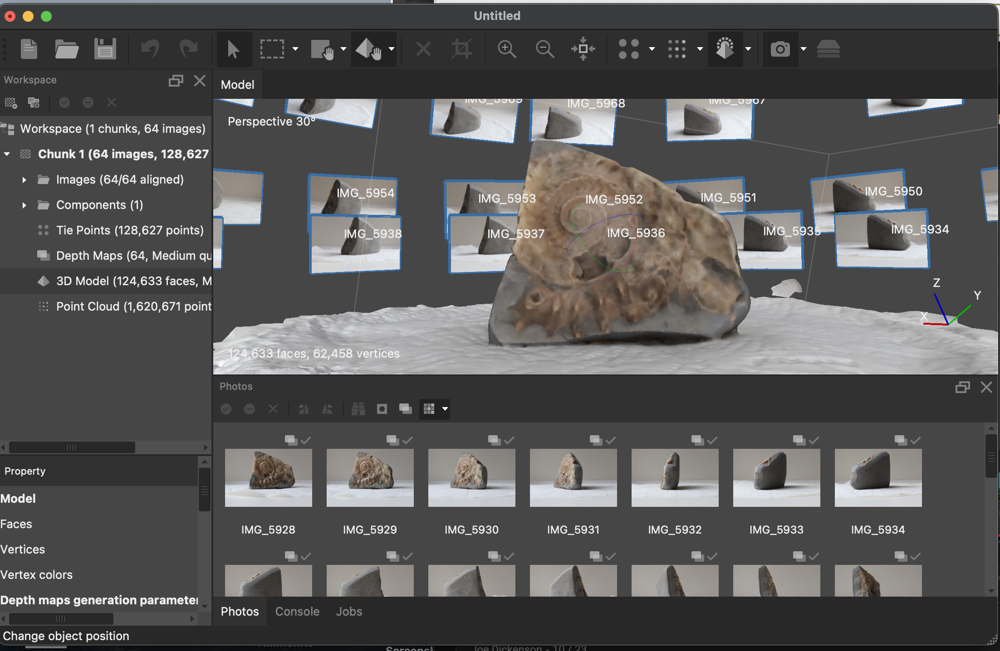
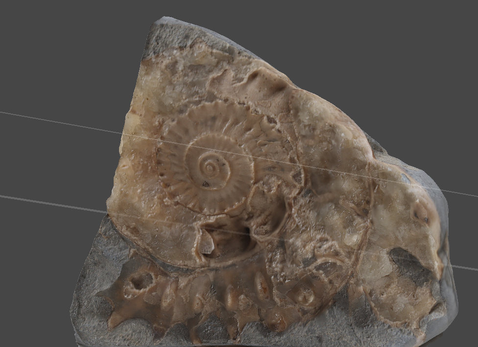
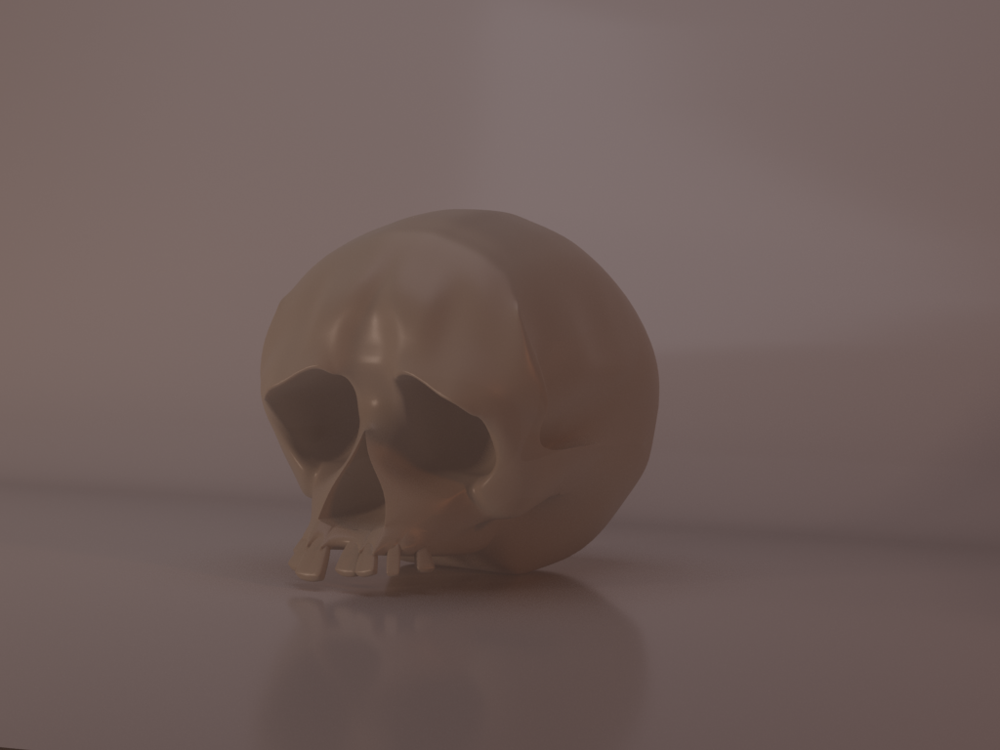
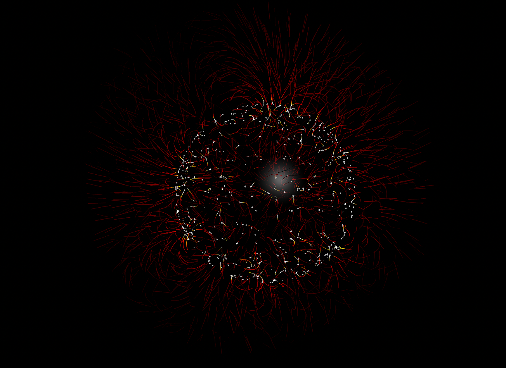
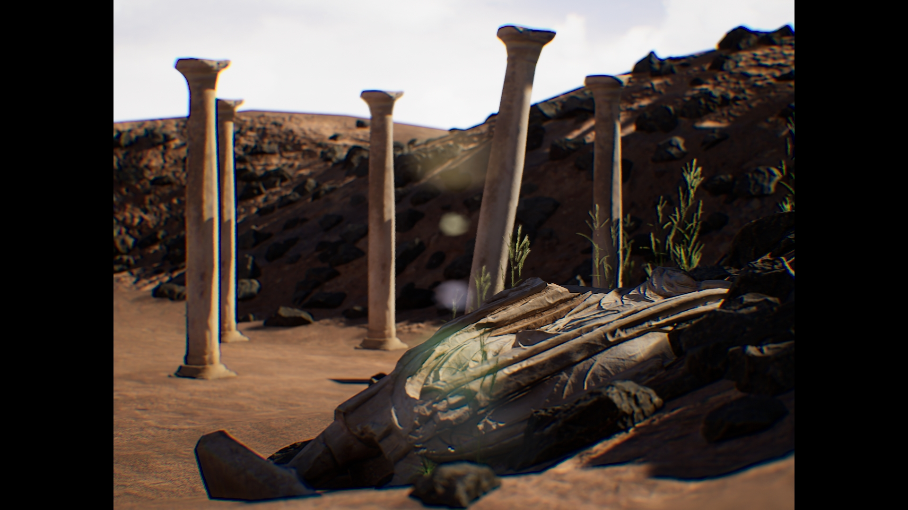

WORK
Currently working in client-side VFX Production, while also gaining an understanding of various tools and techniques used throughout the VFX pipeline, including modeling, simulation, and compositing.
On Set Data Acquisition
I have gained expereince in a large variety of data acquisition processes and techniques. I have preformed witness camera operation using a Blackmagic camera on a major motion picture for camera tracking and element capture purposes. I have undertaken camera notetaking during lens gridding, aided in maintaining a witcam database, and aiding in obtaining lighting reference onset (grey/chrome spheres). I have also learned the techniques of photogrammetry, from image capture through to processing.



Photogrammetry Practice, 'Ammonite,' processed using AgiSoft Metashape
CG
Trained in 3D modeling software Autodesk Maya, with knowledge extending to UV mapping, textures, lighting, Arnold rendering as well as some knowledge of rigging and animation. I have been working to gain familiarity with creating simulations using Houdini. I also have some experience navigating Unreal Engine and have experience using the software to create envoironments for use in Virtual Production as well as set up of the n-display within the scene.



Maya 3D Modeling, 'Skull'
Houdini Simulation, 'Magnetic Field Lines'
Unreal Engine Envoironment, 'Desert Archeology'
©2026 ANIKA BROWN. All rights reserved.